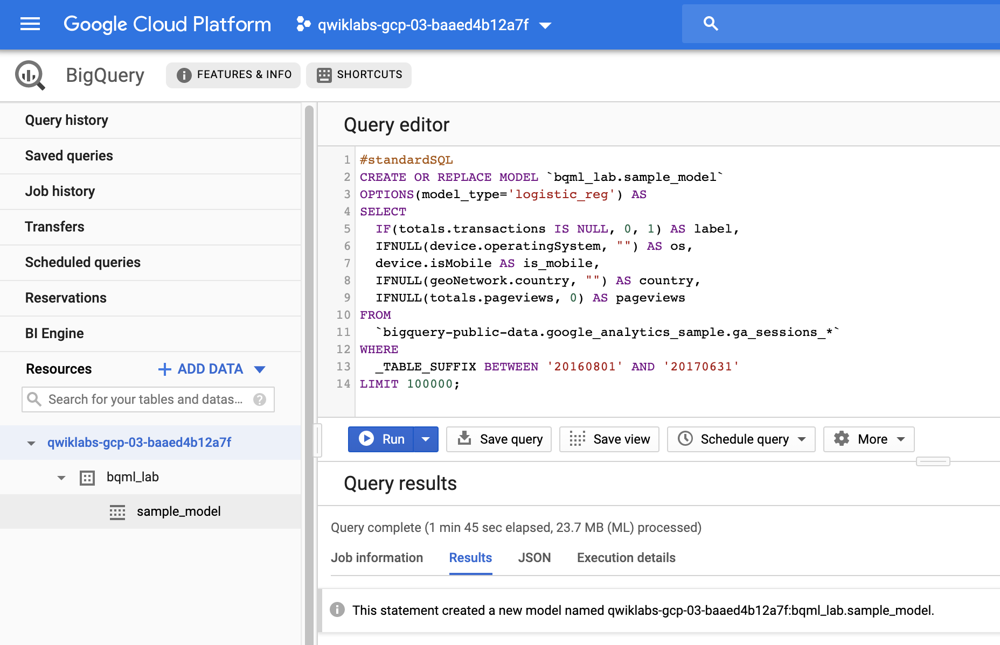
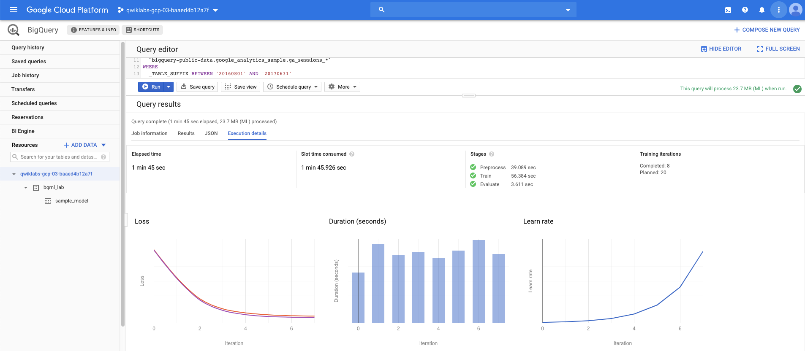
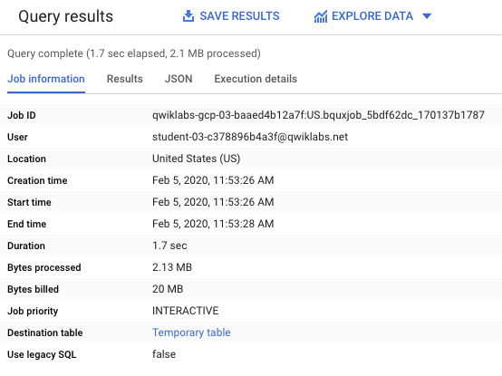
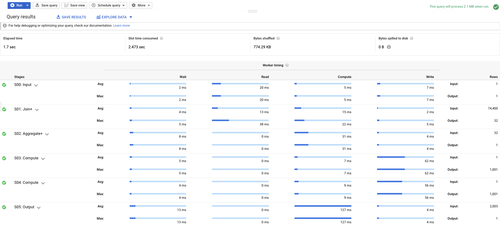
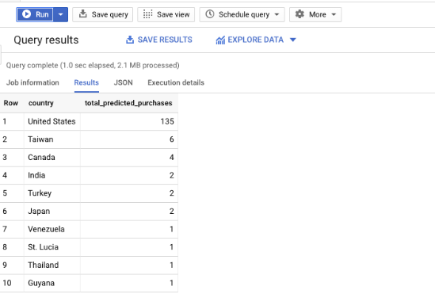
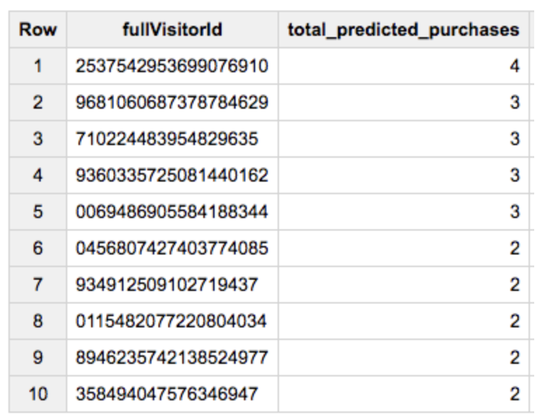

[GCP] 只要懂SQL 即刻打通 BigQuery ML 任督二脈 | BigQuery ML Hands-on
Getting Started with BQML
Getting Started with BQML | Qwiklabs
▌只要會SQL就能做Machine Learning？
是的！沒錯，BigQuery ML是bases BigQuery，它的運作是提取BigQuery 內的data提供ML訓練模型。使用上80%的語法都是原本的Query的語法，使用ML時儘需加入model_type，如此即可建立從Data Warehouse打造出來的專屬情境模型
BigQuery Machine Learning (BQML, product in beta) enables users to create and execute machine learning models in BigQuery using SQL queries. The goal is to democratise machine learning by enabling SQL practitioners to build models using their existing tools and to increase development speed by eliminating the need for data movement.
▌機器學習的原理 x 天文軌道
先用一個例子來解釋什麼是機器學習？機器學習(ML)實際上是尋找一種數學模型，讓這種模型符合它所要描述的對象。比如說我們要尋找一種描述天體運動的模型，讓它符合太陽系行星的運動情況，今天這個模型就是開普勒-牛頓的橢圓形模型:太陽系中所有的行星和彗星圍繞著太陽系的重心(和太陽的位置很接近但是有所差別)，做橢圓運動。當然，這個模型內不同物體的運動速度和周期不同，這些數據被稱為模型的參數。
有了這樣一個模型，就可以知道今後太陽系中行星和彗星的運行規律了，哈雷就用它成功地預測了哈雷彗星未來回到人們視野的時間。
因此在模型中，要得到模型的參數(比如每一個星體運動的長軸半徑，運動一圈的周期)，就要根據觀察到的歷史資料計算
▌Mobile x 預測交易機率
換一個例子，我們想透過mobile裝置的歷史資料包括device.operatingSystem、device.isMobile、使用者的國家、以及總瀏覽次數，共四項指標去預測客戶再次交易的機率
#standardSQL
CREATE OR REPLACE MODEL `bqml_lab.sample_model`
OPTIONS(model_type='logistic_reg') AS
SELECT
IF(totals.transactions IS NULL, 0, 1) AS label,
IFNULL(device.operatingSystem, "") AS os,
device.isMobile AS is_mobile,
IFNULL(geoNetwork.country, "") AS country,
IFNULL(totals.pageviews, 0) AS pageviews
FROM
`bigquery-public-data.google_analytics_sample.ga_sessions_*`
WHERE
_TABLE_SUFFIX BETWEEN '20160801' AND '20170631'
LIMIT 100000;其中
一開始我們使用
[CREATE MODEL](https://cloud.google.com/bigquery-ml/docs/reference/standard-sql/bigqueryml-syntax-create?hl=zh-tw)子句來建立及訓練名為bqml_tutorial.sample_model的模型。OPTIONS(model_type='logistic_reg')子句代表您在建立邏輯迴歸模型。 邏輯迴歸模型會嘗試將輸入資料拆分成兩個類別，並且給予各類別資料一個機率。這邊有用
0,1的 label標示有沒有交易，像這樣有標記的就是supervised learning，訓練出的模型可以對一個新的使用者行為資料預測他”會不會交易”以辨識電子郵件是否屬於垃圾郵件為例，其屬於您有意偵測的事件；這類事件通常會用 1 表示，而不在此類的他種事件，則以 0 代表。若邏輯迴歸模型輸出 0.9，則表示有 90% 的機率為輸入資料是您想偵測的事件 (電子郵件屬於垃圾郵件)。
這個查詢的
SELECT語法提取下列欄位，而這些欄位可被模型用來預測顧客完成交易的機率:totals.transactions— 訪客於當次工作階段內所達成的電子商務交易總數，若交易次數是NULL，label欄位的值就會被設為0，否則該欄位就會被設定為1，這些值皆可用來表示可能的結果。若要在CREATE MODEL陳述式中設定input_label_cols=選項，那麼建立一個名為label的別名是可行的替代方案。device.operatingSystem— 訪客裝置的作業系統。device.isMobile— 用來表示訪客的裝置是否為行動裝置。geoNetwork.country— 以 IP 位置來表示該次工作階段的流量來源國家。totals.pageviews— 當次工作階段的總檢視頁數。
FROM子句 —bigquery-public-data.google_analytics_sample.ga_sessions_*- 表示正在查詢 Google Analytics 樣本資料集此資料集位在
bigquery-public-data專案中，以日期為分類查詢一組資料表。這可用資料表名稱中的萬用字元來表示：google_analytics_sample.ga_sessions_*
- 表示正在查詢 Google Analytics 樣本資料集此資料集位在
WHERE子句 —_TABLE_SUFFIX BETWEEN '20160801' AND '20170630'— 限制了查詢所能夠掃描的資料表數量，而所掃描的日期區間則是從 2016.08.01 年 8 月 1 - 2017.06.30
▌模型有那些呢 | Supported models in BigQuery ML
看完上面的例子，還算簡單吧？因為除了既有的SQL語法之外，其實就只一條code 是在建立模型 → “OPTIONS(model_type=’logistic_reg’)”，那麼到底有幾種呢？
Introduction to BigQuery ML | Google Cloud
目前有三大類forecasting、classification、 data segmentation，包含客製model共五種：
- Linear regression for forecasting
- Binary logistic for classification
- Multiclass logistic regression for classification
- K-means clustering for data segmentation
- TensorFlow model importing | 客製用
以下簡單說明模型使用的場景：
1. Binary logistic | 二元分類模型
簡單說就是用來做二分法，非A及B，就是兩個可能的類別之中，選其中一個當作結果
- 二元分類問題範例
- 是否問題 → 「這個電子郵件是否為垃圾郵件？」
- 會不會問題 → 「客戶會不會購買此產品？」
- 是A還是B → 「這個產品是書籍還是電子產品？」
2. Multiclass logistic | 多類別分類模型
Multiclass logistic ML 模型可讓您為多類別產生預測，簡單說就是預測兩個以上結果的其中一個。
- 多類別問題範例
- 「這個產品是書籍、電影還是衣服？」
- 「這個電影是浪漫喜劇片、紀錄片還是驚悚片？」
- 「這個客戶最感興趣的產品類別為何？」
3. Linear regressio | 線性回歸模型
回歸問題的 ML 模型預測未來可能發生問題，使用數值做為結果基礎。
- 回歸問題範例
- 「西雅圖明天的溫度為何？」
- 「這個產品會售出多少單位？」
- 「這棟房屋的售價為何？」
▌實戰BigQuery
#1. 訓練模型
訓練模型之前有個前提是帶你的dataset，因屬於BigQuery工作這邊先不多述。看我們的例子使用的模型類型是二元邏輯回歸。在這種情況下，標籤就是你試圖適應的東西

訓練結果| Execution details
產出有三個criteria可以參考：loss、Duration、Learn rate。我們可以發現iteration(迭代)經過了八次，確實有助了loss的下降，代表模型有很高的正確率
什麼是學習率(learn rate)
這個參數是掌握模型的學習進度，如何調learn rate是訓練出好模型的關鍵要素。比如說learn rate對梯度下降的影響，如果learn rate太小，代表對神經網絡進行非常小的權重更新，會使其訓練變非常緩慢；另外learn rate太大，可能導致無法收斂。什麼遺失值(loss)
ML演算法是透過若干已知預測結果的範例 (像是使用者購買次數的歷史資料) 以及藉由迭代法來不斷調整模型中的各式權重，使得模型預測得以與真實數值吻合。最後能達到這個目標，是因為機器學習演算法透過「遺失」指標降低模型的錯誤預測。
預期目標是每次迭代，遺失值越來越低 (理想狀況是降低到 0)。遺失值 0，代表模型具有 100% 的正確率。
「訓練資料遺失率」(Training Data Loss) 資料欄代表在訓練資料集上指定迭代後計算出來的損失指標。由於您執行了邏輯迴歸，因此該資料欄是對數損失， 「評估資料遺失率」(Evaluation Data Loss) 資料欄是在保留資料集上計算的相同損失指標 (從訓練資料收回以驗證模型的資料)。
#2. 使用Model 預測
剛訓練完的模型，可以再經過一次資料評估但這邊先省略，直帶入做預測，我們要做的是用此模型來預測結果，您使用模型預測來自於每一個國家的網站訪客所進行的交易次數。
- FROM ml.EVALUATE(MODEL
bqml_lab.sample_model：選擇方才建立的模型 - SELECT：選擇進入的變數
- FROM：選擇進入的table
- WHERE：指定table 的日期
選用的資料集為
ml.EVALUATE(MODEL `bqml_lab.sample_model
選用每個國家的網站訪客所進行的交易次數 → 故SELECT country
使用的資料期間為
20170701 - 20170801→ 注意這次帶入的資料就是用不同區間的資料#standardSQL
SELECTcountry, SUM(predicted_label) as total_predicted_purchasesFROM
ML.PREDICT(MODEL `bqml_tutorial.sample_model`, (SELECT
IFNULL(device.operatingSystem, "") AS os, device.isMobile AS is_mobile, IFNULL(totals.pageviews, 0) AS pageviews, IFNULL(geoNetwork.country, "") AS countryFROM
`bigquery-public-data.google_analytics_sample.ga_sessions_*`WHERE
_TABLE_SUFFIX BETWEEN '20170701' AND '20170801'))GROUP BY country
ORDER BY total_predicted_purchases DESC
LIMIT 10
通過這個查詢，預測每個國家的訪問者進行的交易數量，對結果進行排序，並根據購買情況選擇前10個國家：
其中
[ML.PREDICT](https://cloud.google.com/bigquery-ml/docs/reference/standard-sql/bigqueryml-syntax-predict?hl=zh_tw)函式可運用您的bqml_tutorial.sample_model模型來預測結果。這個查詢的巢狀
SELECT陳述式及FROM子句與CREATE MODEL查詢中的相同。WHERE子句 —_TABLE_SUFFIX BETWEEN '20170701' AND '20170801'— 它限定查詢掃描的資料表數量，日期區間提定在 2017.07.01 - 2017.08.01 ，GROUP BY與ORDER BY子句藉由國家名稱分組結果，並以遞減方式將預測到的交易次數加總後進行遞減排序。LIMIT子句在此處的用途是僅顯示前 10 筆查詢結果。Job info
duration：可以看到執行的時間花了1.7 secbytes processed：這次Query，是以量計價的模式(on-demand )，BigQuery 會根據「bytes processed處理的位元組數」，白話說也就是系統讀取的bytes，這項指標來收取執行查詢作業的費用

work timing
完整從SQL篩選資料給ML訓練使用Input → Join → Aggregate → Compute(S03)平行運算 → Compute(S04)平行運算 → Output

3. 預測結果說明
預測1：
執行 ML.PREDICT 查詢，可以看到表格是預測各國的消費預測如下表
預估1：美國會有209次的購買
預估2：台灣會有006次的購買
預估3：加國會有004次的購買

預測2：
另外也可以修改Query，變成是預測每位使用者的購買量，我們把f
ullVisitorId加入到SELECT預估1：客戶ID: 2537542…910，未來會有4次的購買
預估2：客戶ID: 9681060…629，未來會有3次的購買
預估3：客戶ID: 7102244…635，未來會有3次的購買
#standardSQL
SELECTfullVisitorId, SUM(predicted_label) as total_predicted_purchasesFROM
ml.PREDICT(MODEL `bqml_lab.sample_model`, (SELECT
IFNULL(device.operatingSystem, "") AS os, device.isMobile AS is_mobile, IFNULL(totals.pageviews, 0) AS pageviews, IFNULL(geoNetwork.country, "") AS country, fullVisitorIdFROM
`bigquery-public-data.google_analytics_sample.ga_sessions_*`WHERE
_TABLE_SUFFIX BETWEEN '20170701' AND '20170801'))GROUP BY fullVisitorId
ORDER BY total_predicted_purchases DESC
LIMIT 10;